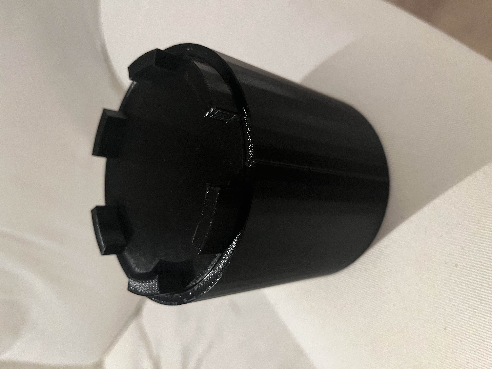

Tijdens de eerste IoT workshop zijn we begonnen met het werken met Arduino. Gelukkig was ik hier al mee bekend omdat ik voor mijn studie een treinspoorwegovergang moest maken met een arduino. In deze les zijn we begonnen met een uitleg over de verschillende onderdelen waar we mee gaan werken. Waarna we begonnen met het installeren van een LEDje in onze arduino. Ik vond het zeer interessant om tijdens deze les te zien hoe de studenten van bedrijfskunde om gingen met deze informatie, en om hun te helpen als zij niet meer verder kwamen.
In de tweede les zijn we verder gegaan met het programmeren van onze arduino. In deze les hebben we gewerkt met verschillende onderdelen om te kijken hoe deze werken, bijvoorbeeld de Soil Moisture Sensor. Met veel van deze onderdelen had ik nog niet gewerkt dus het was leuk om hier mee aan de slag te gaan en daarna te kijken wat er gebeurt.
In de derde les zijn we aan de slag gegaan met de data die we terug kregen van de verschillende sensoren die we hadden aangesloten aan de arduino. Deze data werd gestuurd naar InfluxDB waar we bijvoorbeeld goed de natheid van de ruimte konden inzien. Ik vond het interessant om de data die gestuurd werd gevisualiseerd te zien worden. Tijdens deze les kreeg ik een beter beeld hoe je bij een bedrijf data kan verschaffen van een machine, en hier mee aan de slag kan gaan. Dus je zou bijvoorbeeld in een kwekerij allemaal soil moisture sensoren kunnen plaatsen en deze data kan je dan bijvoorbeeld gebruiken om in te zien dat plantjes beter groeien als het nog iets vochtiger is, of juist minder vochtig.
In de vierde workshop heeft Mathijs uitgelegd hoe je een PCB moet maken. Deze PCB moet later gebruikt worden in je IoT-schakeling.
In de eerste 3d-workshop leerden waarom 3d-printen in sommige opzichten beter is dan de normale manier van produceren. Een belangrijk voorbeeld hiervan is het snel produceren van een proof of concept. De normale manier van produceren is vooral gericht op veel en snel produceren waardoor het heel duur is om een concept te maken van een nieuwe product, in dit geval kan 3d-printen een goede oplossing zijn. Een proof of concept maken met behulp van 3d-printen is veel sneller en goedkoper omdat je hier bijvoorbeeld geen dure mal moet kopen die je misschien na een keer gebruiken weg moet gooien omdat het proof of concept toch niet helemaal de juiste oplossing is. Ik vond het heel interessant om te horen over additive manufacturing en waar additive manufacturing op dit moment staat. Voor deze les had ik het gevoel dat additive manufacturing nog veel moet innoveren omdat het heel duur en langzaam is vergeleken met hoe we nu producten produceren, en dat is nog steeds het geval, maar tijdens deze les heb ik geleerd dat additive manufacturing op dit moment inderdaad nog niet klaar in voor de grote productie, en dat hoeft ook helemaal niet want er zijn andere manieren die additive manufacturing toch een goede innovatie maken voor het produceren.
In de tweede les hebben we geleerd over de verschillende manier van additive manufacturing. Er zijn veel verschillende manier van additive manufacturing die bestemd zijn voor verschillende doeleinden. Je hebt manieren waarmee je bijvoorbeeld ijzer kan 3d-printen. Ik vond deze les zelf minder interessant als de anderen omdat ik niet het gevoel heb dat ik hier ooit nog mee ga werken.
In de derde les hebben we meer informatie gekregen over hoe solidworks werkt. Ik vond deze les zeer interessant omdat ik hierdoor meer inzichten heb gekregen over hoe ik mijn bakje kan maken voor mijn IoT-schakeling.
De laatste les van Herold heb ik niet gevolgd omdat er een bedrijvenmarkt was waar ik in contact ben gekomen met verschillende bedrijven waar ik eventueel in september stage zou kunnen lopen.
Mijn IoT-schakeling is in mijn mening zeer goed gelukt. Ik ben zeer tevreden in zowel mijn 3d-print als mijn schakeling.
Ten eerste vind ik dat mijn 3d-print er zeer goed is uitgekomen. Vooral nadat het printen de eerste keer niet lukte vanwege een fout in de slice. De printer was gestopt met printer na de eerste opzet. Ik ben hierna even gaan zitten met een van de werknemers van het FabLab die mij heeft geholpen met mijn print, en deze keer was die wel gelukt. Het idee achter mijn print was een middeleeuwse verdedigingstoren die goed zou passen bij bijvoorbeeld iemand die houd van lego.
De schakeling maken begon bij het maken van mijn PCB-plaatje. Helaas kon mijn PCB-plaatje niet gemaakt worden waardoor ik er een van een klasgenoot moest gebruiken, gelukkig heb ik er een van Marc kunnen krijgen. Nadat ik mijn PCB had was het tijd om te solderen. Dit is gelukkig allemaal goed gegaan. Toen het solderen gedaan was, moest ik beginnen met mijn IoT-schakeling in elkaar zetten, hieronder is een foto te zien van mijn schakeling.